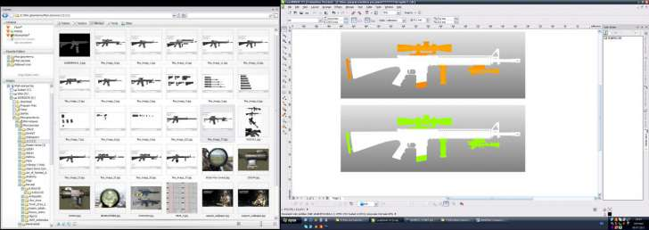

ВОПРОС / ОТВЕТ ДЛЯ НАЧИНАЮЩИХ
polzovatel-902 / 13.07.2010, 09:21/00:41
Форум:
Объясню на примере, чтоб было понятней... Открываю в кореле картинку (футболку с надписью) в формате JPG, мне нужно вытянуть из футболки надпись, т.е разъеденить файл... Говорят нужно формат изменить, еще что-то... Объясните, пожалуйста, что нужно сделать для этого...? Заранее спасибо.
Sancho, Ага, нашел. Если выташить на второй монитор и растащить там до полного размера то просматривать все достаточно удобно. Восклицательные знаки видимо обозначают недоступные сервисы.

Подскажите плиз, как вызвать диалог создания файлов в X4, если при любом из трёх стандартных способов сразу создаётся файл.
Макет -> Параметры страницы не предлагать)
Herozero, никак!
Тю О_о
А в X5 этой проблемы нет?
Herozero, читай Что нового в CorelDRAW X5
Понял, оно только там появилось)) Спасибо!
Добрый день, прошу помощи.
Мне понравилась одна менюшка на каком-то сайте, хотел сделать ее
копию на русском языке.
Размер рисунка 265х28 px
Создаю в Corel новый файл - но почему-то выставляется размер 265х30 px
Ну да ладно - переживу.
Делаю фон, взял системный фрифт пока, все подготовил - клево
получилось.
Теперь мне надо сохранить в GIF или JPEG формате.
1) Пробую Файл - Экспорт - JPG: почему-то уменьшается размер по
умолчанию до 64х7 px. Качество убивается.
С GIF - тоже самое.
2) Пробую Файл - Публиковать в Web - Оптимизатор web изображений: там
почему-то размер идет уже 582х66 px.
Как же добиться такого же качества?
Как это все сохранить при конвертации?
Оригинал в Corel - arenda.cdr
alex_avd, читай это: Особенности рисования для WEB в CorelDRAW X4
alex_avd, перед созданием документа в Create a New Document укажи 72dpi, и то что по ссылке.
Открываю Ваш файл.
Щёлкаю по линейке правой кн. мыши.
В окне настройки параметров нажимаю кн."Разрешение".
В открывшемся окошке изменяю значение 300 на 72.
В документе всё сгруппировываю и на панели свойств, в окошках размеров выставляю новые значения: 256 и 28.
Всё экспортируется чётко с такими размерами.
Страницы